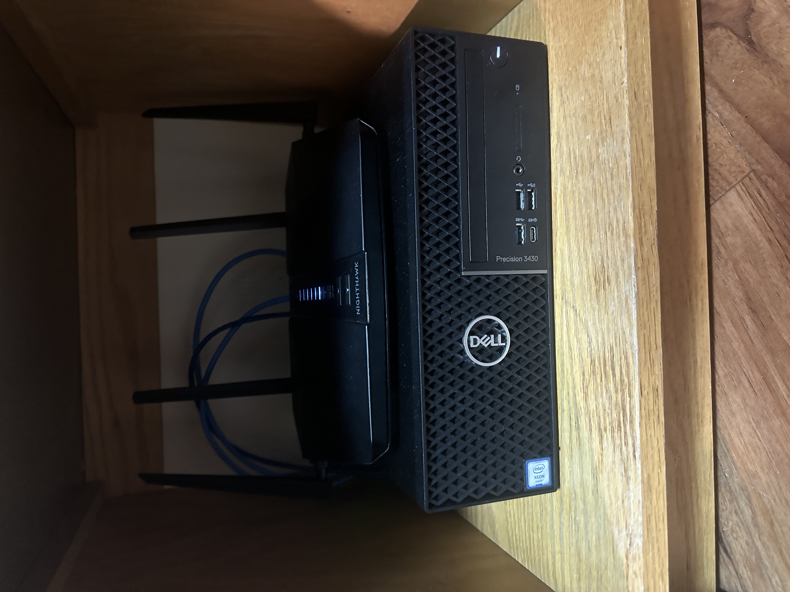

Introduction to my homelab.
Garrett NuttingSo, getting started, why did I decide to create this homelab, and what does that mean? For anyone who is unfamiliar with what a homelab is, “A homelab is an environment, computers, in this context, equipped for experimentation or research” (Click here for more information). For me, the idea of a homelab was intriguing because it offers a way for me to get hands on experience with different types of technologies, and to experiment with them. As an Information Science student at Michigan State University, I am looking to establish my career within the Information Technology industry. It has become my passion, and my homelab fuels my ambition to learn more about modern technologies, cyber security practices, and networking. Aside from learning, my homelab has practical applications that make my life easier. By utilizing things like file share, this allows me to easily access my files without having to use a cloud storage provider like OneDrive, Google Drive, Amazon Drive, etc. Cloud storage services like OneDrive give me issues, and for me, setting up my own server and enabling file share has made it easier for me to access files across all my devices, while simultaneously keeping my files safer and viewed only by my eyes.
Here's a diagram of my current homelab, I'll go more in depth later. This is just a visualization to give you a better understanding of what I've accomplished so far.

How it works
Garrett NuttingThe process of creating my own homelab within my dorm room has not been an easy task. Michigan State University utilizes Dynamic Host Configuration Protocol (DHCP) on their network. MSU requires that each students register their device on the DHCP Device Registration in order to connect to the network and gain access to the internet. DHCP automatically provides an IP host with its IP address and other related configuration information such as the subnet mask and default gateway. The DHCP server maintains a pool of IP addresses that it will hand out to devices as they start up on the network. Your device is essentially “leasing” this IP address and will release it back into the pool of IP addresses if renewal occurs and the device that was leasing that IP is not on.You can learn more about it here.
Now that we have a basic understanding of DHCP and what it does and how it works, how does that affect my homelab? One of my goals when creating my homelab was to create my own Active Directory domain where I can organize all users on my network, and experiment with things like groups to further my knowledge of Active Directory. In order to do so, I needed my server to have a static IP address. To comply with MSU DHCP, but reaching my goals on my personal network, I bought a router that allows Network Address Translation (NAT). NAT is a way to map multiple private addresses inside a local network to a public IP address before transferring the information onto the internet. This means that MSU's network receives the traffic from all my devices under one IP address (IP of my router), while any device on the back end of my router (server, PC, laptop, etc.) is under my private network where I can statically route each device. This allows me to statically route my server and allows me to set up Active Directory, Domain Name System (DNS), and more.
To give you an idea of how I have my devices statically routed, view the table below:
| Device Type | Hostname | IPv4 Address |
|---|---|---|
| Netgear Nighthawk Router | RAX45 | 10.0.0.10 |
| Dell Precision (Windows Server) | DC1 | 10.0.0.1 |
| Personal Windows PC | PC1 | 10.0.0.2 |
| HP Laptop | GarrettLaptop | 10.0.0.3 |
| iPhone 14 Pro Max | Smartphone | 10.0.0.4 |
Here's the hardware components that make up my homelab. I run Windows Server 2022 on a Dell Precision 3430, and the router I use is a Netgear Nighthawk Rax45.
